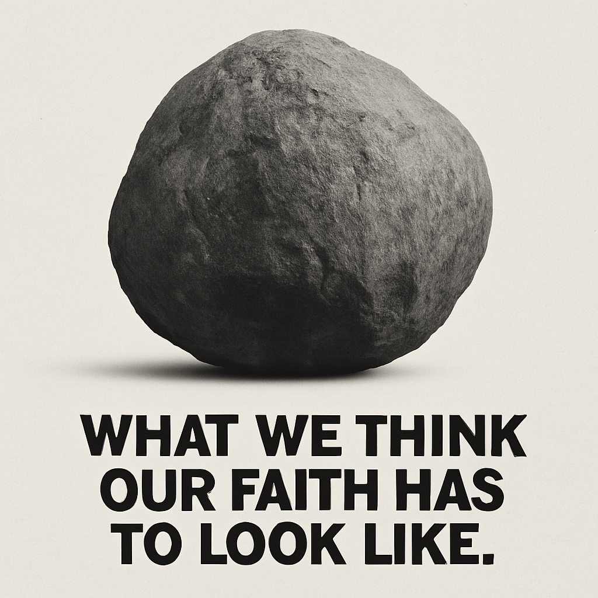

A stone can become a story.
Jacob used what was under him. By morning, the ordinary object had become part of his memory of God.
This page should feel like an old product ad without selling a product: one object, one sentence, enough space for the reader to finish the thought.
Genesis
28:18